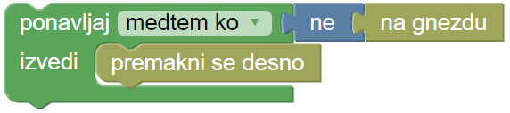

Pišek in zrna II.
Napiši navodilo, po katerem bo piščanček Pišek pobral vsa zrna in jih pospravil v gnezdo.
Pišek lahko nosi samo eno zrno naenkrat.
Uporabi
blok ponavljaj medtem ko ali ponavljaj dokler ni,
blok ponavljaj dokler ni,
zanke for,
kot na primeru spodaj.
 ali

Ko ne vemo vnaprej koliko ponovitev nas čaka, uporabimo blok ponavljaj medtem ko ali ponavljaj dokler ni. Število polj med zrnom in gnezdom nam ni znano:Število vrstic, v katerih sta zrno in gnezdo, nam ni znano:
Naloga vsebuje dva testa z različnim položajem gnezdain z različnim številom zrn. Tvoj program mora delovati na obeh.